実はメガドライブミニってハックすると遊べるソフトを入れ替えたり、エミュレータを入れたりすることができるって知ってましたか！？
ここでは遊べるソフトを追加する方法を説明します！
メガドラソフト互換性チェック
まずは遊びたいゲームがメガドラミニに対応しているか以下の互換性リストでチェックしましょう！
Mega Drive / Genesis Mini 互換性リスト
ご所望のソフトが遊べるようでしたら準備するものについて説明します。
準備するもの
- メガドライブミニ本体
- データ転送可能なmicroUSBケーブル (もしUSBメモリのデータを使いたい場合はOTGケーブル)
- Windows 7以降のパソコン
- 遊びたいメガドライブソフトのゲームデータ
「データ転送可能なmicroUSBケーブル」とわざわざ書いたのは、メガドライブミニ付属のmicroUSBケーブルは充電専用でデータ転送は出来ないからです。 持ってない方はデータ転送可能なmicroUSBケーブルを購入してください！
改造ソフト
ハックするにはHakchi2 CEや、Project Lunarというアプリを使います。 両方入れるのは不具合の原因となるので、どちらか片方だけを使います。 Project Lunarは開発が止まっているので、個人的にはHakchi2 CEの利用をおすすめします。
Hakchi CEでのやり方
STEP 0: Hakchi2 CE配布ページから最新版のzipファイルをダウンロードします。 そしてzipファイルを解凍して「Hakchi.exe」を実行します。
STEP 1: Hakchiの画面で「Sega MegaDrive (JPN)」を選択します。(日本版の場合)
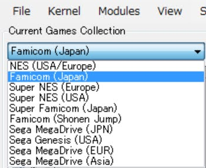
カーネルのダンプ
STEP 2: Hakchi上部の「Kernel」メニューから「Dump kernel（カーネルのダンプ）」をクリックします。これは安全のために元のシステム（約512MB）を保存しておく非常に重要な作業です。
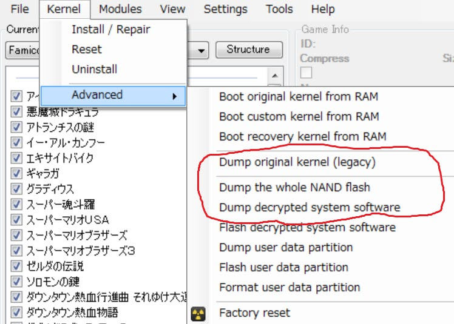
STEP 2: メガドラミニをパソコンに接続
STEP 3-1: パソコンにmicroUSBケーブルを挿します。
STEP 3-2: メガドラミニにUSB電源ケーブルが挿さっていたら抜きます。
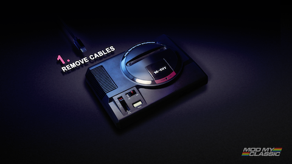
STEP 3-3: メガドラミニの電源スイッチをONのところにスライドさせます。
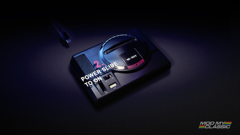
STEP 3-4: リセットボタンを押し続けます。
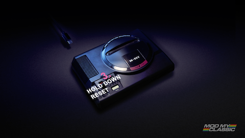
STEP 3-5: そのままリセットボタンを押しながらパソコンに繋げたmicroUSBケーブルをメガドライブミニに繋げます。
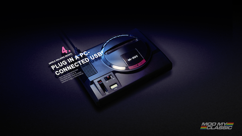
STEP 3-6: LEDが点滅したらリセットボタンを離して大丈夫です。
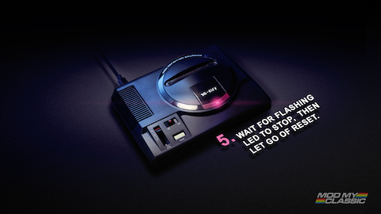
STEP 3-7: Hakchiが"Online"になったら成功です。
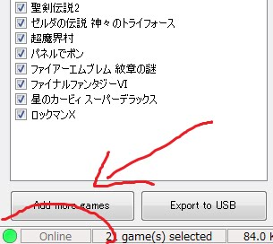
カスタムカーネルのインストール
STEP 4: 上部の「Kernel」メニューから「Install / repair」をクリックしてカスタムカーネルをインストールします。
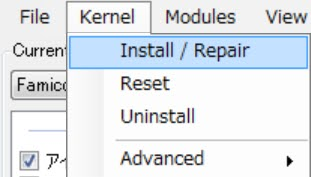
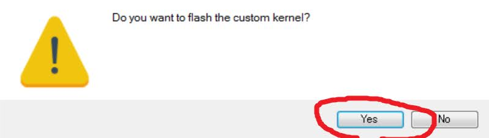
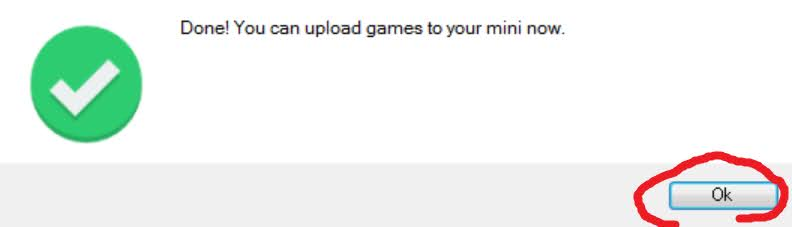
STEP 5: ゲームの追加
Hakchiの画面左下の"Add more games"ボタンをクリックして、追加したいゲームのファイルを選択。
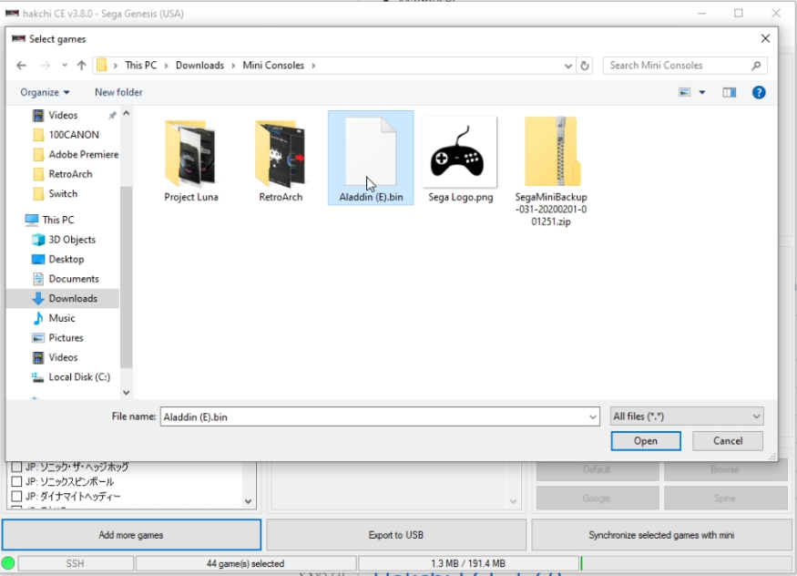
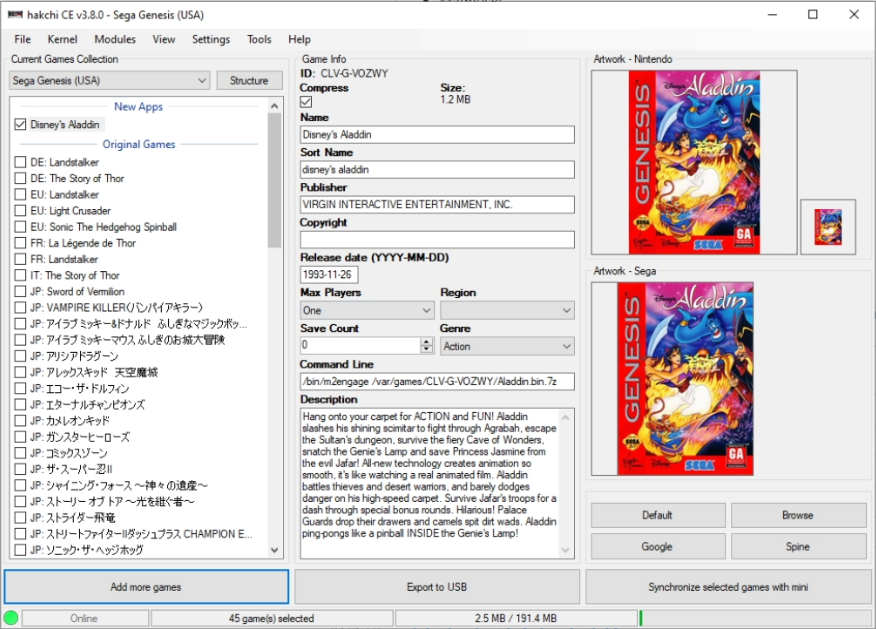
STEP 6: パソコンとメガドラミニの同期
Hakchiの画面右下の"Synchronize selected games with mini"ボタンをクリックすると、パソコンからメガドラミニに追加したいゲームがコピーされる。
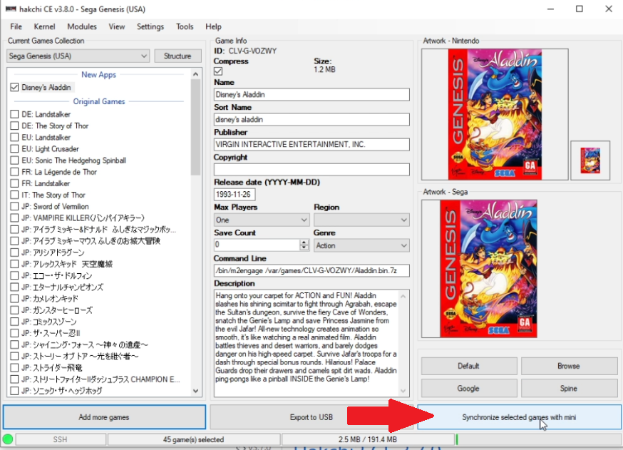
Project Lunarでのやり方
ここからは、Hakchi2を使わないでProject Lunarでやる手順を紹介します。
Project Lunarのインストール
STEP 0: Project Lunar配布ページに行って最新版の「ProjectLunar-x64.zip」をダウンロードします。 そしてzipファイルを解凍して「ProjectLunar.exe」を実行します。
STEP 1: 続いてメガドラミニの操作です。まずUSB電源ケーブルを抜きます。
STEP2: 電源スイッチをONのところにスライドさせます。
STEP3: リセットボタンを押し続けます。
STEP4: そのままリセットボタンを押しながらパソコンに繋げたmicroUSBケーブルをメガドライブミニに繋げます。
STEP5: LEDが点滅したらリセットボタンを離して大丈夫です。
STEP6: インストールが始まってインストール画面が表示されます。インストールが完了するまで10分くらいかかります。
Project Lunarの使い方
パソコンとメガドラミニをmicroUSBケーブルで繋ぎます。
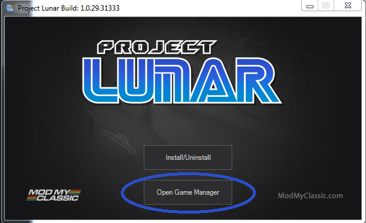
パソコンの「Project Lunar.exe」を起動して「Open Game Manager」をクリックします。
数秒待つとパソコンがメガドラミニを認識します。
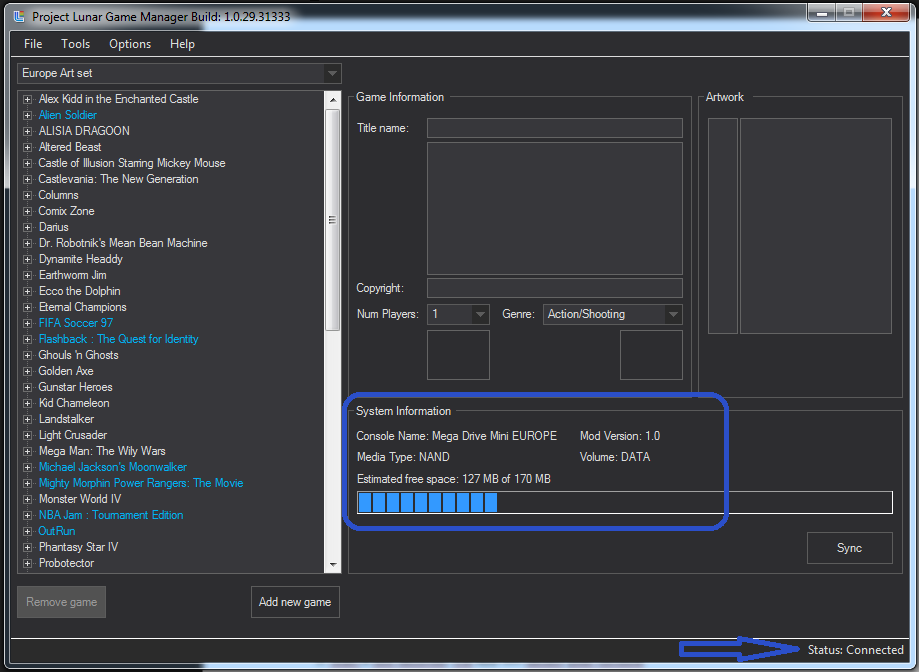
新しいゲームを入れるには「Add new game」をクリックします。そして追加したいゲームのROMファイル (拡張子が".bin", ".gen", ".md"のもの) を選択します。
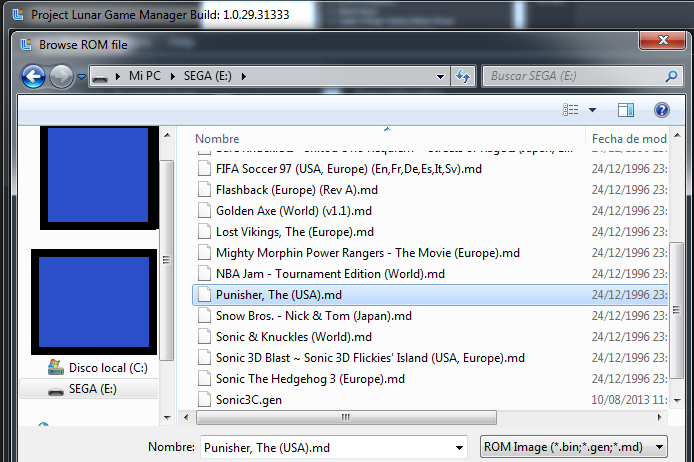
選択すると追加するゲームのウィンドウが出ます。
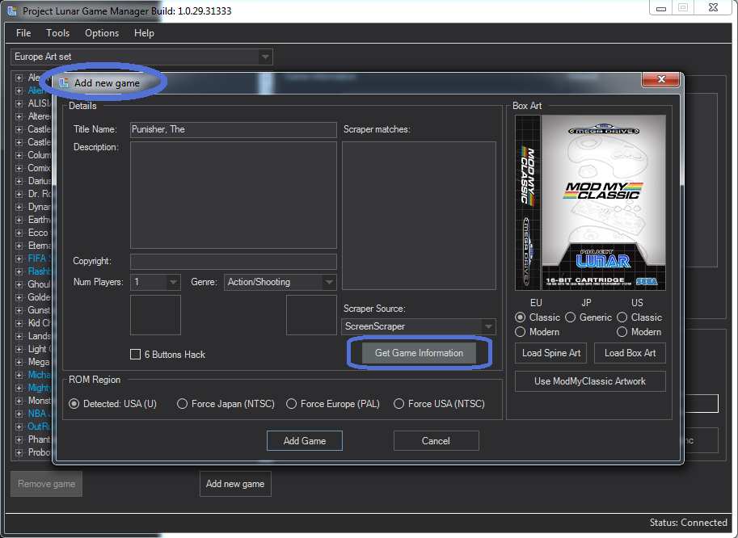
「Get Game Information」をクリックするとROMファイルのハッシュ値やファイルネームなどからゲーム情報を取得します。そして全ての項目が自動的に埋まります。このときメガドラミニにマッチするROMのリージョンを選択することもできます。 (いくつかのゲームはリージョンプロテクションがかかっているので注意してください)
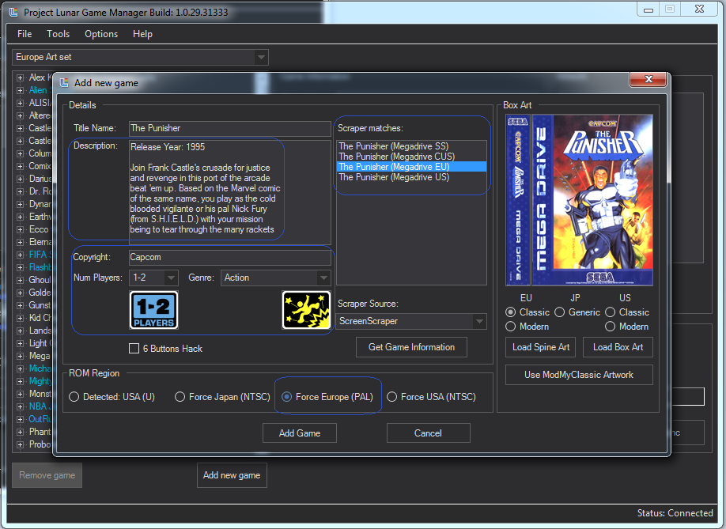
「Add game」をクリックするとメインのウィンドウに戻ります。このときリストに新しく追加したゲームが青く表示されます。
「Sync」をクリックするとメガドラミニと同期 (synchronisation) するか確認されます。「Yes (はい)」をクリックしてしばらく待つとメガドラミニにソフトが追加されます。同期の進捗状況は右下のコーナーで確認出来ます。
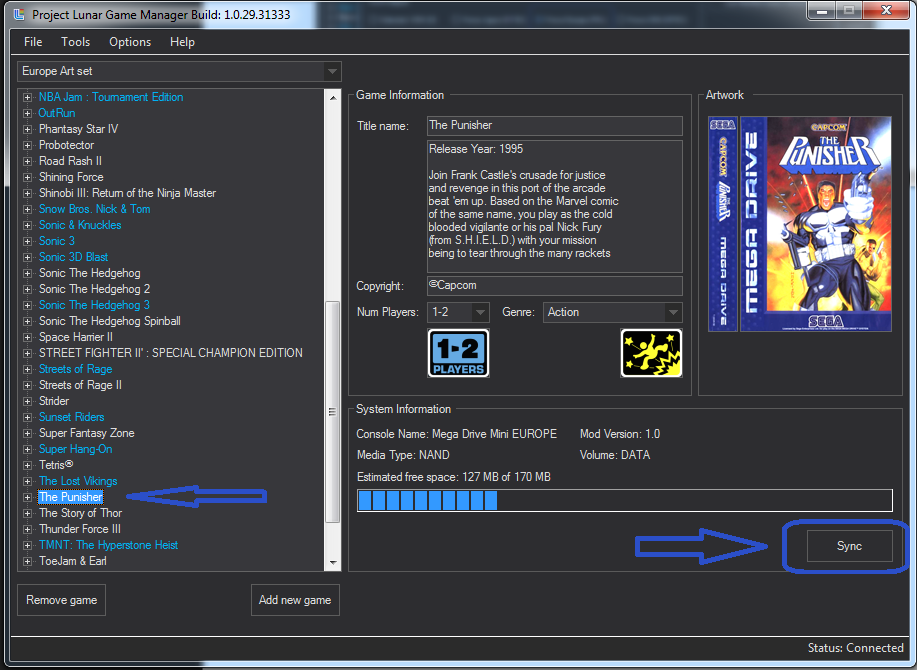
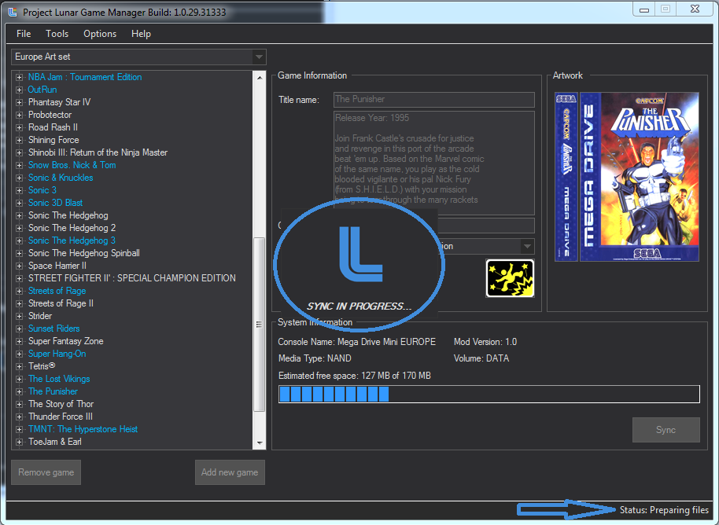
これでゲームの追加は完了です！メガドラミニの電源スイッチをOFFにしてパソコンのUSBケーブルを抜いてください。それではメガドラのゲームをエンジョイしてください！
Project Lunarのバックアップ・復元
Project Lunarのバックアップや元に戻したい時は「Project Lunar: Game Backup Tool」を使ってください。使用方法は下記のリンクに記載されています。
Amazon 購入リンク
 メガドライブミニ
メガドライブミニ メガドライブミニW
メガドライブミニW UGREEN Micro USBケーブル 高速データ転送 1m
UGREEN Micro USBケーブル 高速データ転送 1m
 Amazonベーシック HDMI ケーブル ハイスピード 4K ARC対応 1.8m
Amazonベーシック HDMI ケーブル ハイスピード 4K ARC対応 1.8m
 Retro-Bit 公式セガジェネシス USBコントローラー
Retro-Bit 公式セガジェネシス USBコントローラー (MDミニ用)収納ケース(ブラック)
(MDミニ用)収納ケース(ブラック) (MDミニ用)収納ボックスミニ
(MDミニ用)収納ボックスミニ メガドラタワーミニZERO
メガドラタワーミニZERO メガドラタワー ミニ
メガドラタワー ミニ